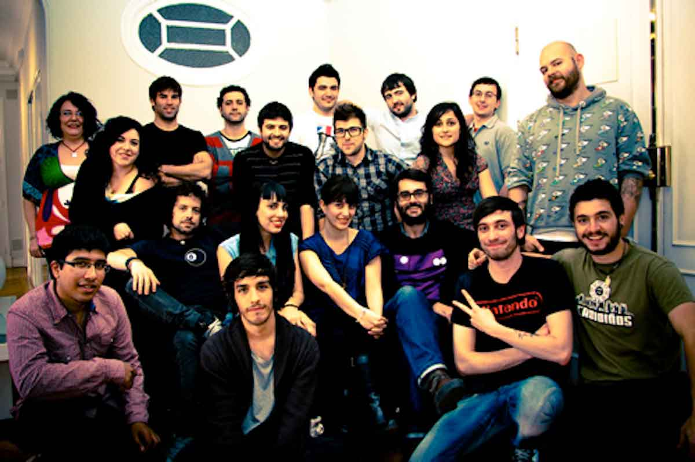
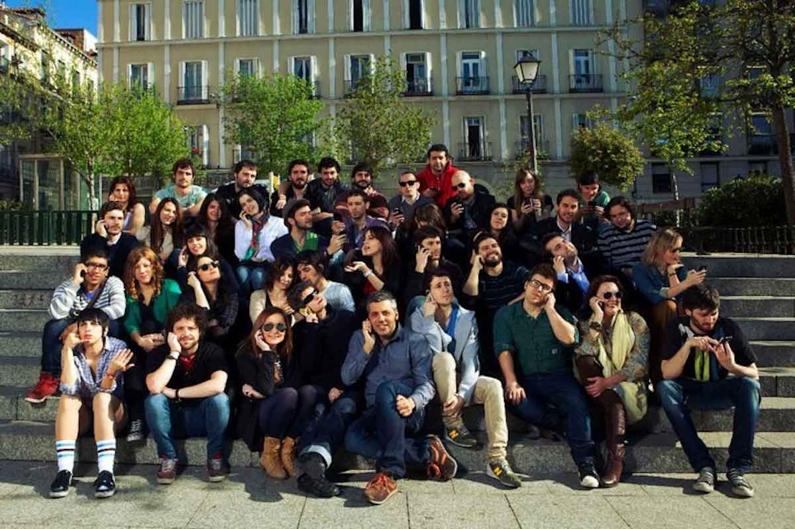

Social Noise
Ene 2008 / Mar 2012
Copy creativo. Social Media Manager. Analista de marcas.
En 2008 me embarco en el proyecto Noise trabajando de Community Manager en la serie televisiva HKM, para Cuatro televisión. A finales de ese año Noise se convierte en Social Noise ganando clientes como Movistar, Nike, Red Bull, Coca Cola, Durex, Universal, entre otros...
En 2009 paso a ser de Community Manager a Coordinador de Proyectos llevando a mi cargo a un equipo de cuatro personas, para la empresa Giro Toys. Empresa que tiene en su poder Cinexin, El Hormiguero, etc. De 2010 hasta finales de 2011 me encargo junto con un equipo de dos personas más a crear un nuevo departamento dentro de la empresa dedicado a la métrica y medida web. Contando con clientes como la Fundación Principe de Asturias. Desde principios de 2012 hasta el 30 de Marzo del mismo año, desempeño labores inter- nas en la empresa como ayudante de la Dirección, comunicación interna y relación entre clientes.
 